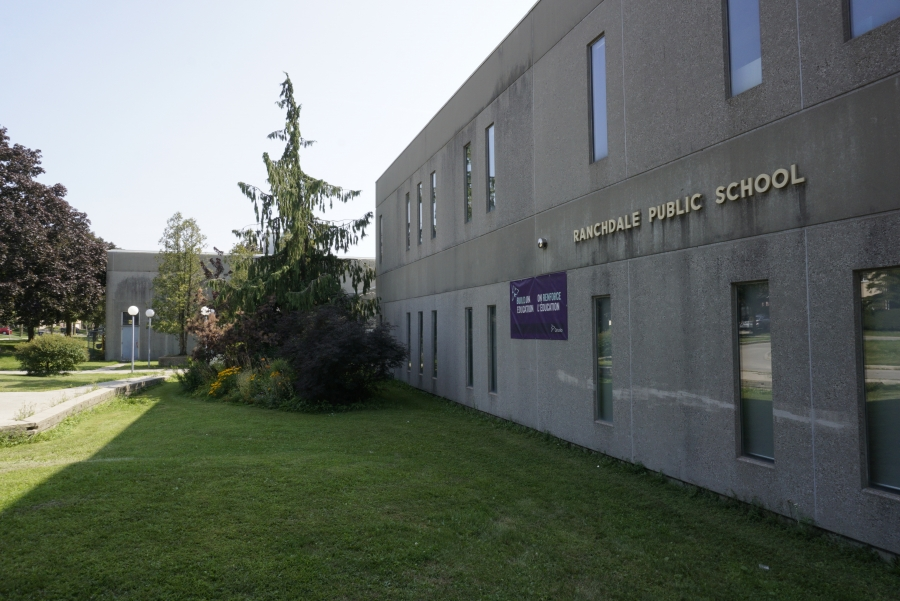
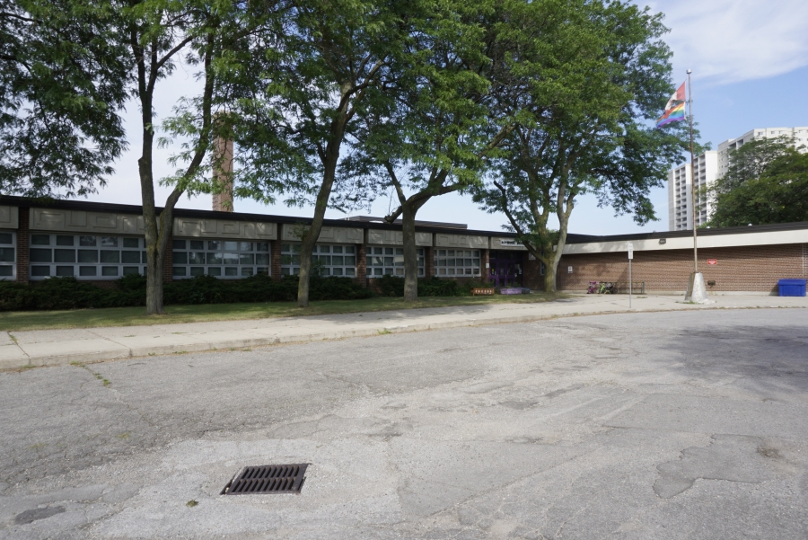
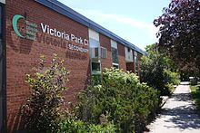
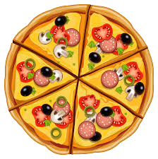

Autobiography
A Small Autobiography:
This page is basically a brief history of me, things like
were I was born, and other things that define me; like which schools I went to.
Hope you guys have a good time reading this.
Birth:
| Birth Date |
Country of birth |
City of birth |
Hospital |
| 2006, June 4th, 9:52am |
Canada |
Toronto |
Scarbrough General Hospital now
known as Michael Garron |
History of Schools:
- Elementary
- Ranchdale: J.K to Grade 1
- Roywood: Grade 2 to 5
- Middle School
- Current



→
→
→
Favorite Foods/Drinks Ranked:
- Ice Capps
- Pizza
- Chips
- Ice Cream
- Cake

Free Time Activities
- Basketball: The first thing I would do if I'm free is go out and play basketball.
- Video Games: If I can't go outside to play basketball, then I would play video games on my Switch or my PS4.
- TV: If I'm not allowed to play video games, the next and final thing I would do is watch TV, as I can always do that.

Reasons For Coming To This School:
- International Baccalaureate Program
- Lots Of clubs
- VPCI is very close to my home.
- Reputable School
- VPCI is a really big school according to a TDSB website
.
TOP